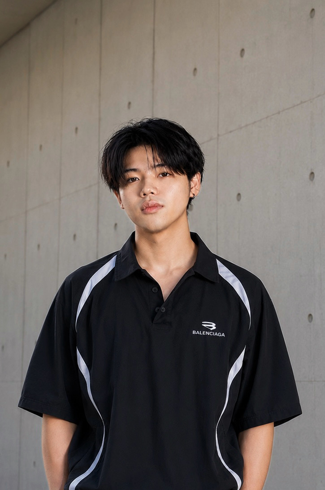
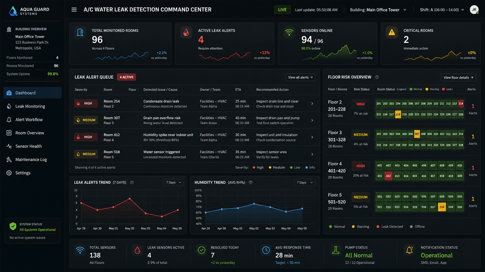
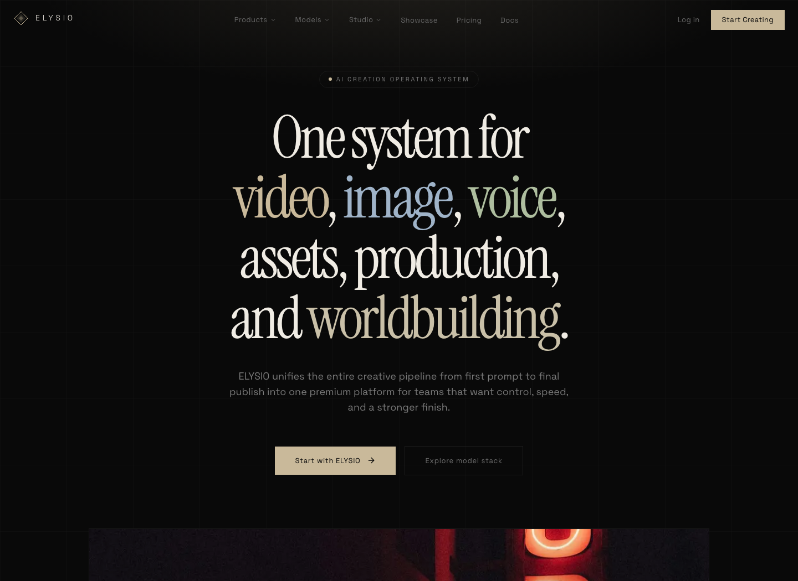

Public Link Hub
Jinnawat's Portfolio
Source link: opl.to/jinwat. Openlink hub for project demos, GitHub repositories, and the ELYSIOAI website.
Industrial AI & Smart Manufacturing Industrial IoT & Data Analytics
M.Eng Industrial Engineering student applying data analytics, Industrial IoT, practical automation, and AI-assisted workflows to real operational problems, including sensor-data monitoring, maintenance analytics, inventory automation, and smart factory reporting logic.

Industrial AI
Smart Manufacturing
Public Channels
Public Link Hub
Source link: opl.to/jinwat. Openlink hub for project demos, GitHub repositories, and the ELYSIOAI website.
Professional Summary
Industrial Engineering graduate and current M.Eng student with project experience in ESP32-class IoT monitoring, temperature/humidity data, vibration and water-leak sensing, Firebase real-time logging, LINE alerting logic, manufacturing-data workflow design, Excel VBA inventory automation, preventive maintenance planning, MTBF/MTTR analysis, and AI-assisted documentation.
Industrial AI / ML Role Alignment
ESP32/NodeMCU-class prototype work with temperature/humidity, vibration, water-leak sensing, Wi-Fi transfer, and real-time logging concepts.
Threshold-based anomaly logic, data preprocessing, dashboard status, predictive-maintenance concepts, and model training/evaluation fundamentals.
Firebase logging, LINE alerting logic, technician-response context, workflow documentation, and AI-assisted reporting habits.
Continuing development in Python ML libraries, C# basics, Git/Linux, scikit-learn workflow concepts, and TensorFlow/Keras/PyTorch basics.
Core Competencies
Process Improvement, Lean Manufacturing, Work Study, RCA, Systems Thinking, Plant Layout, Inventory Management, Logistics, Maintenance Planning, MTBF/MTTR, ABC Analysis, PDCA, DMAIC, Fishbone, Why-Why.
ESP32/NodeMCU concepts, temperature/humidity sensors, vibration sensors, water-leak sensors, Wi-Fi data transmission, Firebase Realtime Database, LINE Notify alerting, and event logging.
Python, SQL, Excel VBA, Excel Macros, data collection, data cleaning, data validation, automated calculation, Streamlit, FastAPI/SQLite concepts, C# basics, Git basics, Linux basics.
Data preprocessing, threshold-based anomaly logic, predictive-maintenance concepts, model training/evaluation fundamentals, scikit-learn workflow concepts, TensorFlow/Keras/PyTorch basics, and Gen AI-assisted documentation.
Selected Projects
Internship Project - Woraburi Sukhumvit / Tested Prototype

Built and tested an ESP32/NodeMCU-class IoT prototype to collect room temperature/humidity, A/C compressor vibration, and water-leak status for smart facility monitoring.
Prototype / Concept Study
Designed a smart-manufacturing data workflow prototype covering machine/sensor data acquisition concepts, preprocessing, storage, dashboard logic, anomaly-detection concepts, predictive-maintenance indicators, and AI-assisted reporting.
Industrial Engineering Capstone Project
Developed an Excel VBA-based inventory workflow for raw material tracking, structured input forms, validation logic, automated calculations, and stock visibility.
Maintenance Management Academic Project
Developed a preventive maintenance plan for a TURNER 460x1000 lathe using historical failure data, MTBF, MTTR, ABC analysis, and PDCA.
Academic IE Projects
Applied Lean, DMAIC, Fishbone, Why-Why, queue analysis, ROI, and breakeven thinking to evaluate inventory, layout, service-capacity, and process-improvement scenarios.
AI SaaS Platform MVP / Workflow Development

Worked on a Next.js-based AI generation platform MVP with Firebase/Firestore, Stripe billing flow, quality scripts, Codex-assisted workflow, mobile shell support, and technical documentation.
Technical Skill Stack
Python, SQL, Excel VBA/Macros, data collection, data cleaning, data validation, automated calculation, dashboard logic, and analytics workflow demonstration.
ESP32/NodeMCU concepts, temperature/humidity sensing, vibration sensing, water-leak sensing, Wi-Fi data transmission, Firebase Realtime Database, and LINE Notify alerting.
Data preprocessing, threshold-based anomaly logic, model training/evaluation fundamentals, predictive-maintenance concepts, scikit-learn workflow concepts, and developing TensorFlow/Keras/PyTorch basics.
MTBF/MTTR, maintenance planning, Lean, RCA, Work Study, inventory, logistics, ABC Analysis, PDCA, DMAIC, Fishbone, Why-Why, Git/Linux basics, and technical documentation.
Education & Certifications
Suranaree University of Technology
Suranaree University of Technology
Target Role Fit
Strong fit for early-career work involving sensor-data acquisition, machine-condition monitoring, early issue detection, dashboard status, maintenance analytics, and data-driven process optimization, with continued development in Python ML libraries, C#, Git/Linux, and real factory data systems under professional team guidance.